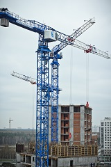

КАТАЛОГ ТЕХНИКИ
Башенные краны |
|
 Башенные краны TDK-10.215.NTK с монокабиной NTK на анкерном исполнении (2013г. выпуска).
В конструкции крана TDK- 10.215.NTK применены новейшие решения используемые лидерами мирового башенного краностроения.Разработка крана производилась под контролем европейских конструкторских организаций. Грузовысотные и скоростные характеристики соответствуют лучшим мировым образцам в своем классе.
Кран башенный TDK-10.215.NTK может устанавливаться на рельсы, анкерное основание или опорную секцию
Технические данные:
1) Основные механизмыОпорно-поворотное устройство производства PSL (Словакия) снабжено централизованной системой смазки производства Lincoln industrial, GmbH, и оборудовано токосъемником производства Conductix-Wampfler (Германия). Грузовая лебедка состоит из барабана (производства Zollern, Германия), снабженного интегрированным планетарным редуктором (производства Zollern, Германия), электродвигателя LEROY SOMER (Франция). Тележечная лебедка включает в себя барабан (производства Zollern, Германия) с интегрированным планетарным редуктором (производства Zollern, Германия), электродвигатель LEROY SOMER (Франция). Привод поворотного механизма включает в себя два планетарных 3-х ступенчатых редуктора (2×7,5кВт)(производства Zollern, Германия) со съемной приводной шестерней и имеет высокий КПД (до 95%). В электрооборудовании крана используются детали и элементы только ведущих производителей как ABB (Швеция), Schneider-electric (Германия), Control Techniques (Великобритания), разъемы Harting (Германия). Для производства металлоконструкций крана используется металл производства Vallourec & Mannesmann Tubes (Германия). В конструктиве крана TDK-10.215.NTK с кабиной NTK применяется система частотного регулирования с заданием программы от контролера АВВ последнего поколения и специального исполнения. Данная характеристика системы управления частотным приводом TDK-10.215.NTK существенно увеличивает отказоустойчивость всех механизмов крана, позволяет увеличивать скорость и точность позиционирования грузов, что соответственно позволяет увеличивает скорость строительства до 2х раз.
Прибор безопасности:
Кран оснащен новым прибором безопасности и сенсорным управлением полностью сертифицированным для эксплуатации в России, по своим характеристикам и надежности превосходит аналоги таких производителей как Libherr и Potain. Опционально прибор дополняется системой противостолкновения с аналогичным краном на строительном объекте.
Специальная, запатентованная логика работы механизма поворота позволяет существенно увеличить управляемость и точность позиционирования стрелы крана TDK-10.215.NTK при малых перемещениях, при любой знакопеременной ветровой нагрузке (стрелу «не сносит» ветром при ее повороте). Увеличенная динамика торможения на высоких скоростях поворота при сохранении управляемости крана TDK-10.215.NTK, уникальный режим механизма поворота - имитация «торможения противовключением». Применение на TDK-10.215.NTK специальных электродвигателей LEROY SOMER (Франция), Besozzi (Италия) – ведущих производителей в мире, позволяет наилучшим образом реализовать высокое качество нашей системы управления частотным приводом.
Рабочее место оборудовано эргономичным креслом Spohn+ Burghard с удобными джойстиками и множеством регулировок.
Контроллеры АВВ и запатентованное программное обеспечение позволили внедрить комплексную систему самодиагностики крана, что упрощает устранение поломки любой сложности в кратчайшие сроки. Контроллер крана связан через GPRS-Интернет с сервисным центром.
На кране TDK-10.215.NTK используются комплексные разъемы Harting (Германия), что в 2-3 раза сокращает сроки монтажа электрооборудования крана. Вся кабельная проводка прокладывается с дополнительной механической защитой в специальные кабель-каналы.
Полностью русифицированный интерфейс крана и технической документации крана TDK-10.215.NTK.
На кране TDK-10.215.NTK с кабиной NTK применена система монокабины, что означает совмещение кабины машиниста и электрических шкафов, которое позволяет экономичнее использовать микроклимат и доступ к электрическим схемам и электронике.
Получив положительные отзывы от покупателей кран TDK-10.215.NTK введен в серийное производство и с февраля 2013г. выпускается только в комплектации с монокабиной NTK.
Транспортировка автотранспортом всех узлов и частей крана производится в ГАБАРИТЕ.
Предлагаем Вам быстромонтируемые краны.
|